01 ／ 對台灣社會
公益，是社會的第二張安全網。
政府的制度照顧得到大多數人，但總有縫隙：一場颱風、一次失業、一位家長生病，就足以讓一個家庭跌出原本的軌道。這時候，民間的善意往往比任何公文都更早抵達。
台灣人一向不吝於伸手——地震、風災、疫情來時，我們看過無數次「全民一起來」。公益讓這份溫度不只出現在災難時，而是成為日常的社會信任：相信陌生人會幫你，也願意去幫陌生人。
一個願意彼此照顧的社會，才是真正有競爭力的社會。
參與，就是公益。一次消費、一步路跑、一場分享，都能讓一個孩子安心坐進教室。我們邀請企業家，把好事變成一種經營方式——做得久，也做得真。
從古籍、宗教家、企業家到身邊的實踐者——我們把讀了會心頭一熱的話收在這裡。每一句都在說同一件事：善，不看金額，看你有沒有開始。
參與，就是公益。真公益企業家俱樂部 核心信念
公益不一定要很花錢，但一定要用心。真公益核心信念
行善，不是有錢人的專利，而是有心人的權利。證嚴法師《靜思語》
沒有人能決定自己的父母是誰。順發電腦董事長 吳錦昌（遠見雜誌，2013）
我們無法做偉大的事，只能用偉大的愛做小事。德蕾莎修女
企業應該隨時都要貢獻社會，而不是等規模夠大、獲利夠多後才想到。吳錦昌（遠見雜誌，2013）
勿以善小而不為，勿以惡小而為之。劉備，《三國志》
用消費，改變世界。順發「消費做公益」理念
沒有人會因為付出而變得貧窮。安妮・法蘭克
一個人走得快，一群人走得遠。非洲諺語
一家公司可以做公益，100 家公司可以改變世界。吳錦昌，Run for Future 發起人
老吾老，以及人之老；幼吾幼，以及人之幼。《孟子・梁惠王上》
公益，是有足跡的。大樹教練，真公益發起人
贈人玫瑰，手有餘香。俗諺
不是各自做好事，而是一起把好事做大。Run for Future 聯合公益理念
做就對了。證嚴法師《靜思語》
施比受更有福。《聖經・使徒行傳》
大道之行也，天下為公。《禮記・禮運》
公益不是「有餘力才做」的加分題。它是一個社會用來接住彼此的方式——對台灣、對弱勢的孩子、對做公益的企業自己，都是。
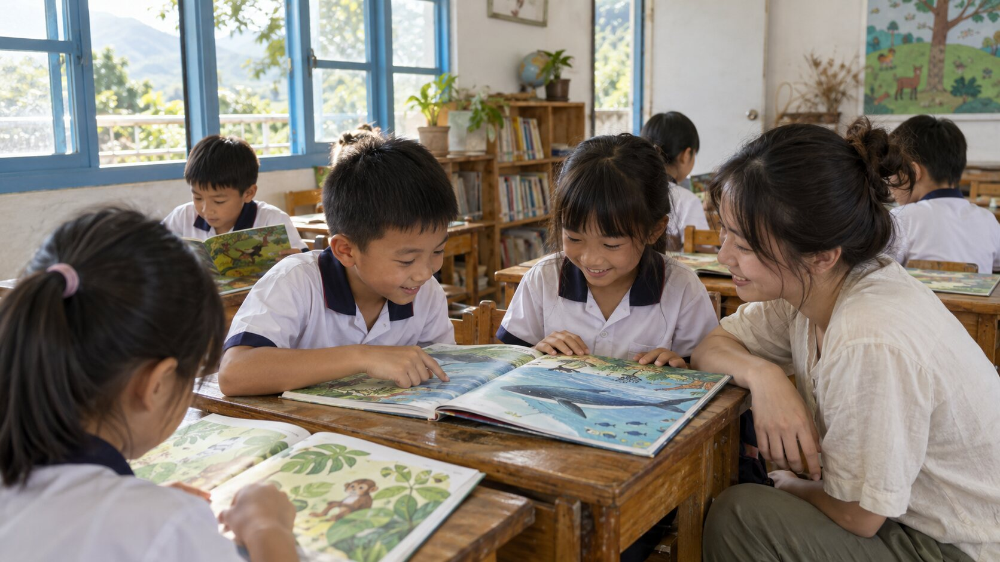
政府的制度照顧得到大多數人，但總有縫隙：一場颱風、一次失業、一位家長生病，就足以讓一個家庭跌出原本的軌道。這時候，民間的善意往往比任何公文都更早抵達。
台灣人一向不吝於伸手——地震、風災、疫情來時，我們看過無數次「全民一起來」。公益讓這份溫度不只出現在災難時，而是成為日常的社會信任：相信陌生人會幫你，也願意去幫陌生人。
一個願意彼此照顧的社會，才是真正有競爭力的社會。
對一個經濟弱勢家庭的孩子來說，一筆學費、一台電腦、一套學習帳號，差別不是「多一點資源」，而是「能不能留在教室裡」。孩子的人格與看待世界的方式，多半在小學畢業前就成形——在這個階段被接住，往往就改變了一輩子。
脫離貧窮世襲，就是讓孩子擁有「選擇」的機會。
好的公益，也守護受助者的尊嚴：不要求孩子曝光、不讓他們站上台領支票，而是讓資源安靜、透明地抵達需要的地方。
產品可以被模仿，價格可以被競爭；但一家公司為這個世界做了什麼，是無法被複製的。員工從「只是一份工作」變成「我在幫助別人」，顧客從比價變成認同。
順發電腦的經驗是最好的證明：剛轉型時也曾被質疑「太天真」，幾年後《遠見》採訪時，已有逾九成員工表示認同，甚至有顧客不再比價，只因為認同這份公益。
不知道從哪裡開始？挑一個你最有感的領域，從一件小事做起。
助學金、課後輔導、閱讀資源，讓家境不再決定一個孩子能走多遠。
再生電腦、線上學習帳號、網路與設備，讓偏鄉孩子也能跟上數位時代。
支持育幼院、寄養與團體家庭，讓失去依靠的孩子在關愛中長大。
送餐、陪伴、共餐據點，讓獨居長輩不孤單，也讓照顧者能喘口氣。
就業機會、輔具與無障礙環境，讓每個人都能用自己的方式參與社會。
颱風、地震後的物資、重建與復學，善意總是最早抵達現場。
電子產品回收再生、減碳節能，照顧孩子的未來，也要照顧他們的地球。
公益路跑、健走，讓流汗這件事同時也在幫助別人——運動，也能是公益。
讓偏鄉孩子也能看一場表演、學一樣才藝，美感教育同樣是受教權。
2010 年，順發電腦宣布轉型為「公益型企業」，承諾每年捐出淨利的 20% 幫助弱勢學童。不靠一次性的大筆捐款，而是把公益寫進每一筆交易裡——讓顧客不多花一毛錢，就能一起做公益。
17 年公益累積成果，數據由順發電腦提供，統計至 2026 年 9 月。
順發電腦董事長吳錦昌，雲林出生、嘉義長大，父親是台電職員，下班後在家兼賣雛雞與飼料。他大學落榜、說話還有點結巴，卻靠著苦幹一路把順發做成「南部最大的電腦通路」，2012 年獲頒創業楷模。
轉折發生在某一天的報紙上：一則因失業缺錢、帶著孩子全家燒炭的新聞，讓他差點掉下眼淚。他意識到，科技進步讓上層的人更富裕，卻取代了許多基層的工作——而自己賣的電腦，正是推手之一。
「沒有人可以選擇自己的父母，生長在弱勢家庭的小孩，需要社會共同來照顧。」2010 年，他不顧股東、同業甚至家人的疑慮，宣布順發每年捐出淨利的 20%：其中 10% 由公司提撥、10% 由他個人捐出；就算當年虧損，也以每股盈餘一元的水準，至少捐出約 1,600 萬元，守住承諾。
資料來源：ETtoday（2015/8/5）、遠見雜誌（2013/4/30）、華冠投顧專訪（2018/9/21）
承諾捐出淨利的 20% 幫助弱勢學童。顧客在門市結帳的那一刻，就同時參與了一次公益。
每 100 元淨利，20 元交給孩子的未來。
保證買貴退差價——做公益不需要顧客多付一毛錢。讓「行善」與「划算」不再是二選一。
公益不一定要很花錢，這就是最好的示範。
捐款主要投入弱勢學童的就學支持與學習資源，透過透明、低管理成本的平台（如教育部學校教育儲蓄戶）直達需要的孩子。孩子不需曝光，而是親手寫一張感謝卡，把心意傳回給捐助者。
← 左右滑動，看完整足跡 →
宣布每年捐出淨利 20% 幫助弱勢兒童，門市制服印上「全民新主義・消費做公益」。
以教育部學校教育儲蓄戶為主要捐款管道，讓善款盡可能直接用在孩子身上；吳錦昌獲頒第 35 屆創業楷模。
獲《遠見》第九屆企業社會責任「公益推廣組」首獎，也是當屆唯一獲獎的南部企業；三年捐款已逾 1 億元。
成立「20 for Future 公益企業聯盟」，號召更多企業一起響應。
與高雄上市櫃企業家協會合辦公益路跑，結餘 98.6 萬元贊助高雄偏鄉 11 所學校孩童就學。
與高雄市教育局合作，三年捐贈 1,200 組線上學習帳號，47 校次師生受惠，獲頒感謝狀。
簽約推動再生電腦專案，整修後無償送給弱勢學童，同時減少電子廢棄物。
第四屆 Run for Future 吸引 20 國 5,464 名跑者，結餘 173 萬 8,328 元全數捐助高雄 17 個兒少照顧單位。
累積捐款突破 3.3 億元；第五屆 Run for Future 啟動，邀請 100 家企業共同發起。
4 月 18 日，第五屆在高雄港灣文化廊帶起跑，目標 12,000 名跑者、25–30 個國家地區。
不用等到一百位。順發之外，已有 40 位的公益足跡整理成專屬網頁，每一則足跡都附出處。以下是他們頁面裡的「公益足跡」，原文擷取；想看完整故事，點「看完整專屬頁」。
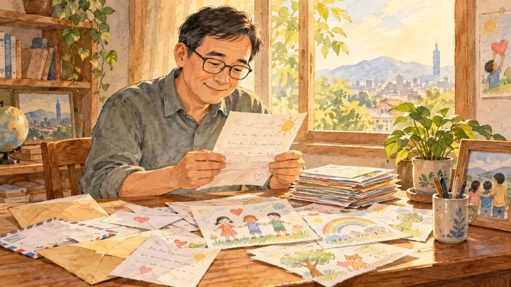
示意插畫好廣告數據創辦人・《信任效應》作者
傳統的公益活動和廣告，常常「像放煙火」：活動一結束，紀錄和聲量就消失了。陳顯立用 20 年的長期認養證明「持續」的力量，再用 AI 時代的技術，讓善行變成可以被看見、被引用、長期累積的數位資產。
有能力之後，每月固定認養 30 多位家扶中心孩子，至今收到超過 100 封畢業與感謝信。
來源：本人受訪分享（認養起始年份待本人確認）認同順發電腦吳錦昌董事長「利他即利己」的理念，好廣告數據為 100 家贊助企業免費提供 AI 內容佈局與 ESG 路跑報告書；企業贊助 6 萬元參加，換得市場價值約 50～100 萬元的數位資產。
來源：本人受訪分享；活動資訊見 樂活報名網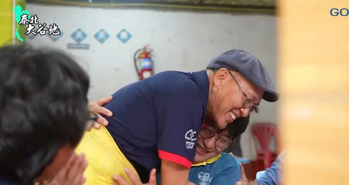
華岡福音隊・泰緬邊境同行
他的公益沒有基金會的名字，而是一雙雙走進村落、營區與宿舍的腳。從台灣鄉鎮到泰緬邊境，華岡福音隊用一個個寒暑假，把「陪伴」走成看得見的路。
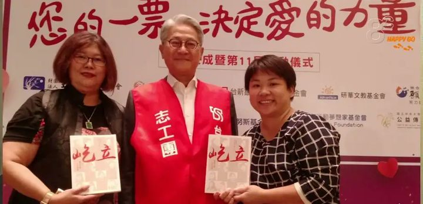
T1科技 ‧ 元照科技照明
從 2010 年拍下第一支社福訪視影片，到今天以企業、協會與時間銀行串起資源——她做公益的方式，是陪伴，也是留下紀錄。
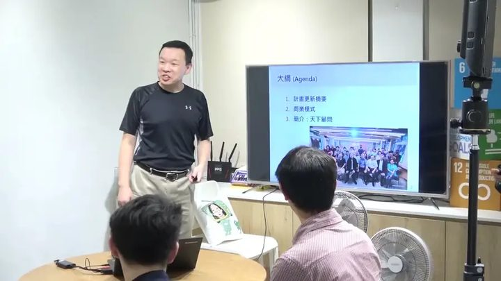
天下顧問・B 型企業
他沒有把公益當成賺錢之後的「加分題」，而是從創業第一天就把利他放進公司的設計裡：B 型企業、時間銀行、全人樂活據點、免費公益講座。十一年來，一步一步留下的足跡，都整理在這裡。
與臺大 EMBA 同學創立天下顧問，目標是不追求高利潤、講求經驗傳承，把多年職場經驗轉化為回饋社會的力量。
出處：臺大 EMBA 專訪，2016成立剛滿一年就通過 B Lab 認證，公司治理、員工、環境、社區、客戶五大面向都要達標。
出處：臺大 EMBA 專訪，2016在臺大 EMBA 社會創新論壇分享線上組織健診；本著 B 型企業的共享精神，把這套工具也提供給其他顧問公司使用。
出處：臺大 EMBA 社會創新論壇，2016在全球數千家 B 型企業評比中，同一年拿下總體獎與社區獎。
出處：天下顧問官網推出「公益競技場」，用常態公益競賽幫非營利組織募款、提升效能與資訊透明；同時發起「天下聯招」，串聯夥伴分享優質內容。
出處：天下顧問頻道，2020.05.15為志工和需要志工的機構打造區塊鏈時間銀行平台，志工服務可以產生、使用、轉讓時間幣。6 月 24 日成立中華全人樂活協會推動公益計畫。
出處：天下顧問頻道，2020.06.01、2020.11.26前往行政院 PDIS（公共數位創新空間）簡報全人樂活公益新創計畫，說明時間銀行構想。
出處：PDIS 影音紀錄，2020.07.22協會承接基隆一處場館，成立第一個全人樂活據點，讓更多夥伴能使用這個空間。
出處：天下顧問頻道，2020.11.26天公幣時間銀行讓志工用時數兌換商品與服務；提供折扣的商家與專業人士，也因此一起參與了公益。同年再獲 Best For The World 社區獎。
出處：天下顧問頻道，2021.08.05；天下顧問官網在新竹開設竹科館，設有讀書區、桌遊區與學習區，固定舉辦課程與公益講座。同年第三度獲得社區獎。
出處：天下顧問頻道，2022.07.22；天下顧問官網4 月 3 日到 6 日在新竹竹科館連辦四場免費公益講座，由朱元中主講，未來將不定期舉辦。
出處：天下顧問官網，2026.03.15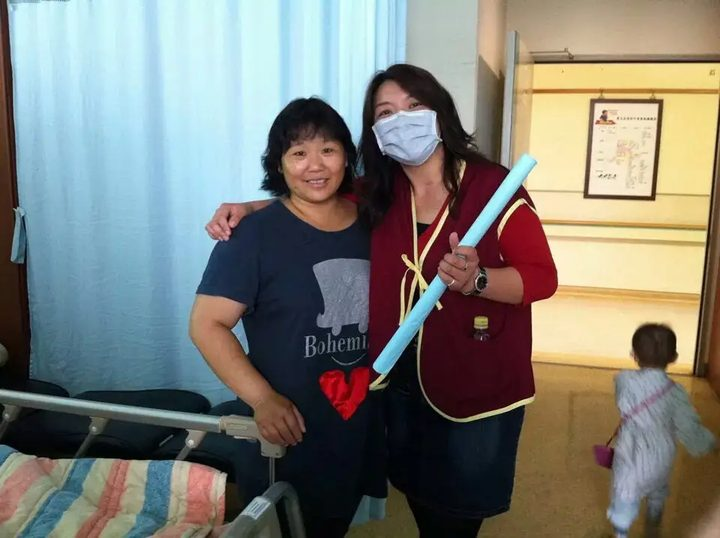
CBMC 高雄一分會會長・職場宣教者
從病房到職場，從高雄到基隆、嘉義。她走過的每一步，都是因為曾經被病痛壓傷，所以更懂得陪伴正在受苦的人。
因母親病倒走進醫護，在病床邊學會陪伴的功課。
出處：CBMC 會員見證影片走進最需要盼望的病房，陪伴癌童與家屬，分享耶穌的愛。
出處：基督教今日報 2019/3/29每週往返、每月自付近 2 萬交通費，最後換來一個家庭的修復。
出處：基督教今日報、CBMC 會員見證每週帶領雲端禱告小組、CBMC 聚會與教會小組，也曾主持大型福音佈道會。
出處：基督教今日報 2019/3/29她遇見一位個性軟弱、家庭破碎的女孩，為她禱告、陪她成長。三年後家庭翻轉，女孩帶領更多人信主，連夫家也宣告要成為基督化家庭。
出處：CBMC 會員見證影片（2019）以會長身分帶領分會，為高雄工商人士打造彼此扶持的屬靈家人。
出處：CBMC 總會官網分會頁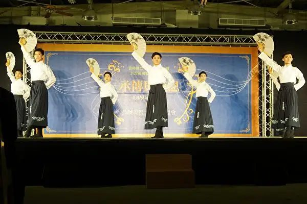
真公益發起人
24 歲開始創業，在中國大陸工作 6 年後回到台灣。2013 年起把演講變成公益，一講就是十多年。
和大紀元桃園辦事處、海餅乾俱樂部合作，在桃園婦女館講「九型人格」。不用報名、不用簽到，來去自由。
出處：大紀元 2013/9/29「情緒管理策略」全台巡講首站，現場近 70 人，並首創免費學習計畫。
出處：大紀元 2013/12/1在桃園婦女館已辦到第五期，每月公告一次，就有近百人如期而至。
出處：大紀元 2014/3/17國際獅子會 300-D1 區與神傳文化基金會合辦，以「文化比策略更重要」為題演講。
出處：大紀元 2017/12/29為 155 位家扶大學生主講「打造你的核心競爭力」。
出處：大紀元 2019/2/16所得扣除場地費全數捐作建設基金；第 16 場在桃園，一位企業主當場捐出 100 萬元。
出處：大紀元 2020/1/5在雲林麥寮「神韻分享聯誼茶會」主講「傳承獅子精神，再現獅子榮耀」，分享獅子會精神。
出處：大紀元 2020/12/2嘉義北興國中、台南永康、新竹 300-G1 區研討會，為老師們分享品德教育與媒體素養。
出處：大紀元 2021/10用故事談品德教育：真誠善良、為人著想，總能柳暗花明。
出處：新唐人 2024/4/22與光點兒童重症扶助協會在台南三道門文創旅店辦公益講座，義賣病童畫作支持藝術受教權。
出處：大紀元 2025/1/123 月到 10 月，從台南、嘉義、高雄走到金門，大多數場次免費入場。
出處：大樹小講歷史紀錄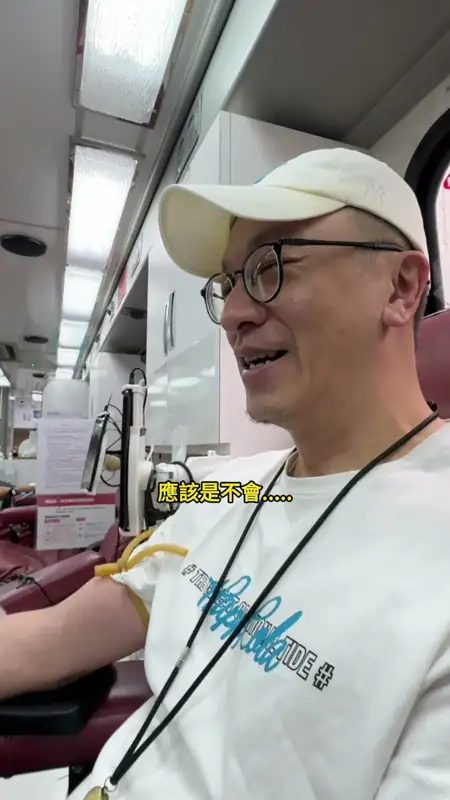
戀家小舖創辦人・20 年電商實戰家
對李忠儒來說，利他不只是捐一筆錢，而是把自己走過的坑攤開來給後面的人看：當評審、陪跑創業者、公開分享 SOP，也在公司裡推動不浪費的文化。
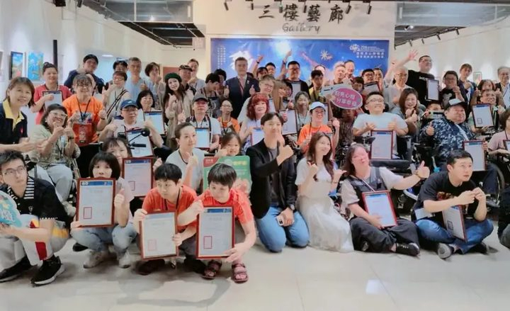
用藝術，創作一座城市
對楊仟慧來說，公益不一定是捐款，而是把自己最擅長的事，變成別人的力量。她往返宜蘭與台北、桃園、苗栗授課，講師費常常只夠補貼交通——她說，教學本身就是一種文化公益。
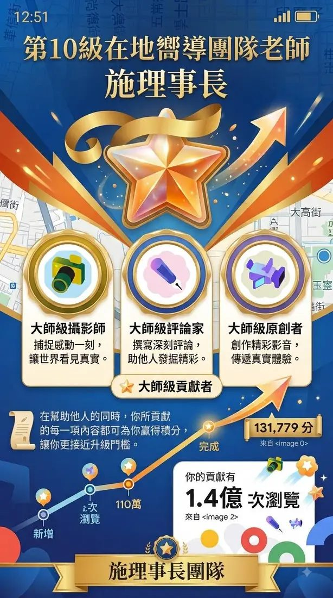
第 10 級 Google 在地嚮導・彰化網購職業工會理事長
在地嚮導徽章的定義，本來就是「協助他人」：每一則評論、每一張照片，都幫陌生人少踩一次雷、多找到一家好店。施理事長的公益，藏在這些日常裡。
照片、影片、評論全部公開在 Google 地圖，累積 1.4 億次瀏覽。
出處：在地嚮導個人頁截圖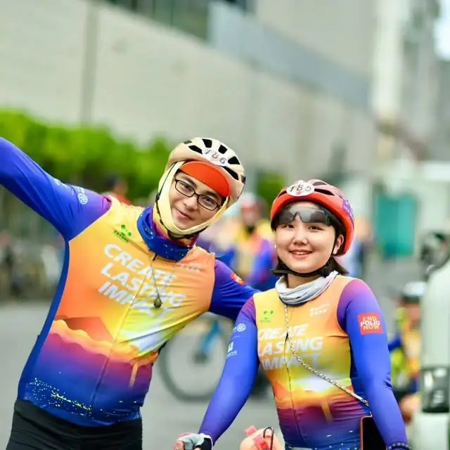
愛喝茶的品牌經營者
對洪誠佑來說，公益不是一句口號，而是一段實際踩出去的路：在扶輪社負責服務計畫、用品牌贊助長輩活動，再跨上單車，為「根除小兒麻痺」一路從嘉義騎到花蓮。
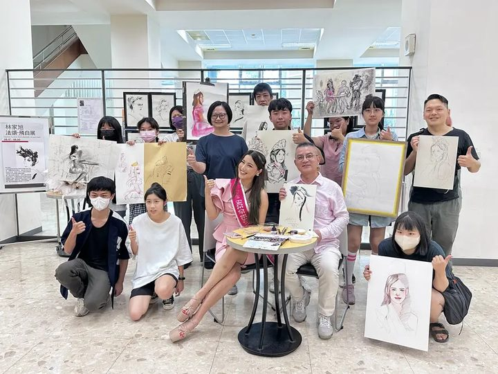
流行・品牌・設計決策・台灣形象設計發展協會理事長
林老師把時尚設計帶出校園：2024 年在臺南市美術館帶長者用舊衣說自己的生命故事；退休後接任協會理事長，把美感與禮儀帶進更多人的日常。
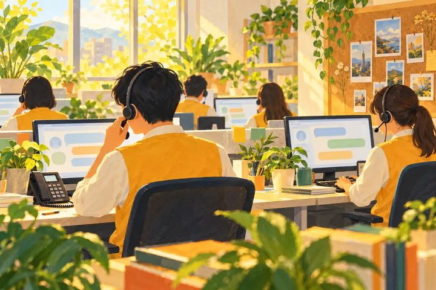
先降溫，再講理的家庭陪伴者
從 2010 年第一屆志工到今天，一支專線、一群「愛老師」，接住了八萬多通電話。對孔令峯來說，這不只是公益，而是「神愛世人」的表現。
完成 72 小時培訓，上線接聽電話。
出處：《好消息月刊》本人撰文由他負責的專線上線，後與全台兩百多間教會結為家庭宣教夥伴；累計來電已超過八萬通，來電者以 40 歲以上為主。
出處：《好消息月刊》；榮樹下專訪本人口述用一對一的文字系統陪伴，使用者大多在 40 歲以下。
出處：榮樹下專訪本人口述經內政部許可設立、完成法院登記，理事長林慶忠，會址在台北市中正區寧波西街，宗旨是「本於基督愛人之信仰」推動協談輔導與健康家庭。
出處：協會法人登記資料經營 GOODear 免費網路協談平台：即時協談、信件協談與線上心理測驗；並與政府單位合作承接員工協助方案（EAP）。
出處：基督教今日報；榮樹下專訪三十多位準志工正在受訓。未來希望以「中央廚房」的方式，協助北中南東的教會與機構建立協談服務，並研發愛情、婚姻、親子的課程與教材。
出處：基督教今日報；榮樹下專訪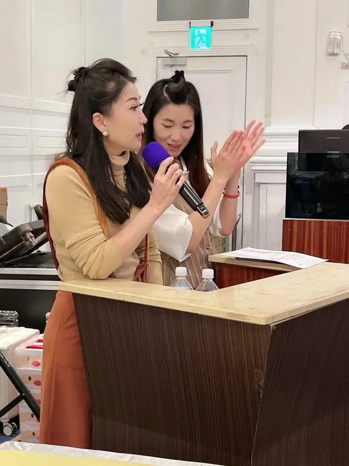
中華新媒體影音發展協會 創會長・新媒體製作人
羅爵把鏡頭和舞台，帶到慈善歌唱賽、社團、部落與客家庄。每一步都留下了影像，也留下了被看見的人。
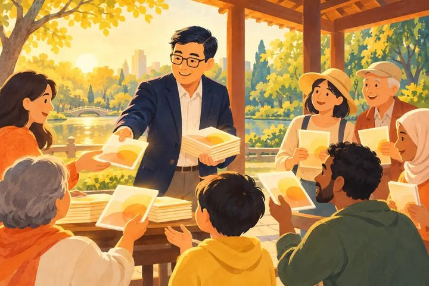
示意插畫企業 AI 導入顧問・易經決策
昆廷老師的公益，是「知識公益」：把顧問現場學到的方法，免費攤開給每一位想學 AI 的老闆、主管與上班族。他說，不公平的不是工具，是沒有人把能力搬出來。
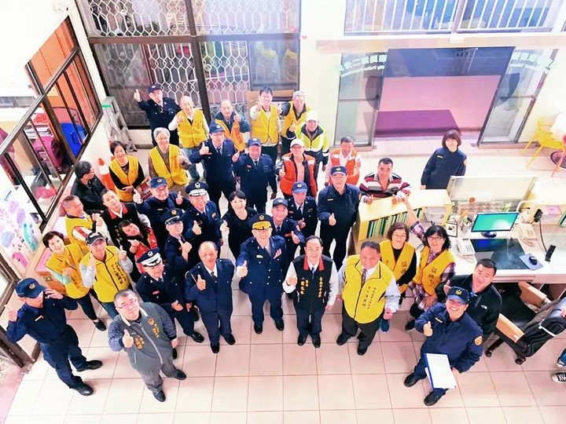
寶麗寶銀樓創辦人・府城志工中隊長
2006 年的一場志工會議，台上問「自願的人請舉手」，她想都沒想就舉了手——從此成了警局裡的「寶華姐」。
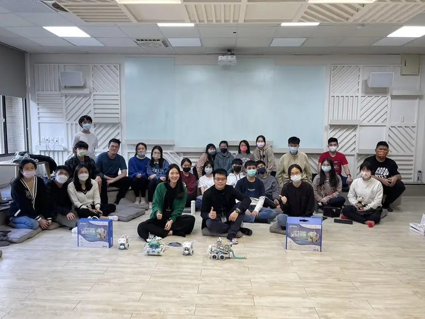
教學進化學院創辦人
「這是一個我為了曾經的自己，所設計的免費先修班。」——不藏私地分享路徑、迷思與工具，讓有料卻不知道怎麼教的專家，不必再自己摸索。
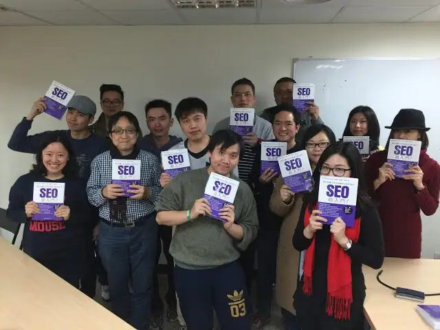
台灣搜尋產業先驅・SEO × GEO 搜尋行銷顧問
連啓佑的公益，是把搜尋行銷的知識免費、公開地分享出去：科普講座、讀書會、產業年會、免費中小企業課程，以及長年持續更新的公開專欄。
面對 AI 搜尋的劇烈變化，持續免費撰文解說零點擊、GEO、品牌語義場，替產業降低焦慮。
出處：將能搜尋成長學院 →薩加瑪奇克創藝學院創辦人・讓每個人都能創作音樂
對陳怡靜來說，音樂不只是一門課。她把歌唱比賽變成募款平台，把錄音室與講座開放給資源較少的孩子，也把商圈、店家和商務夥伴一起拉進來做公益。
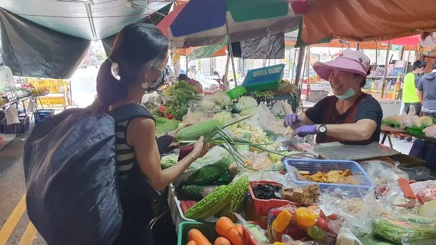
AI 財商 × 騎走讀高雄
防詐、減塑、銀髮數位素養——他把專業拆成大家聽得懂的語言，送到市場、里民中心與樂齡教室。
於新北市中和區福祥里擔任法務部調查局詐騙宣導講師。
連續兩年擔任國家通訊傳播委員會網路素養種子師資。
於芥菜種會服務銀髮族群，並在南區習藝所開設單次課程。
高醫樂齡研究苑碩仕班「AI 跨域學」，含 AI 科技旅遊與防詐主題。
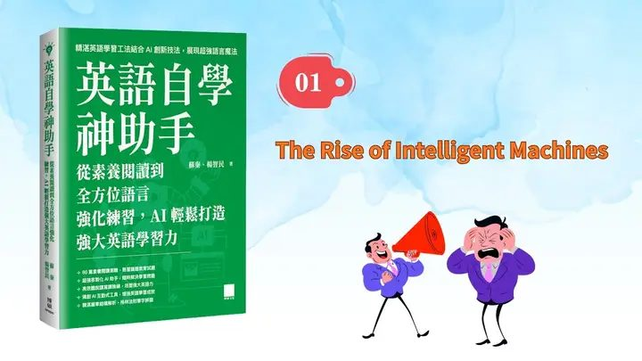
英語教學 × AI 工具應用
蘇秦老師的公益，是把知識免費攤開：研習內容上傳 YouTube、讀者社群親自回答、書中單元的朗讀音檔與摘要影片全部公開，讓偏鄉老師與自學學生也拿得到同一套工具。
寫作、單字、發音到 AI 工具，影片全數免費公開。
出處：YouTube 頻道把 AI 輔助英文教材編製研習綱要放上頻道，供老師自學。
出處：YouTube頻道觀看最多的影片，替老師解決實際操作卡關。
出處：YouTube（3,785 次觀看）《英語教學神助手》讀者可進社群，作者親自回應命題問題。
出處：博客來內容簡介自學書全單元朗讀與摘要影片上架，學生免費聽讀。
出處：YouTube為龍騰版高中英文第二冊製作單字短文與片語故事聽讀。
出處：YouTube每週四 20:00–21:00，作者陪讀者讀完《Gemini Notebook 任務神助手》。
出處：蘇秦臉書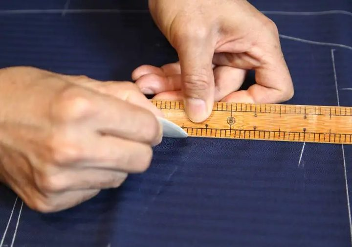
格蘭訂製西服・世界洋服大賽大師組金牌
陳和平說，一路上受到許多人照顧，自覺擔負更多社會責任，因此把「傳承西服工藝、培養新血」當成使命：走進校園、陪伴學徒、把手藝寫成書。
在全國各區扶輪社分享正式場合的穿著禮儀。
出處：格蘭西服官網經歷主講「成功穿著打造菁英風範」，把穿著知識帶進校園家長社群。
出處：格蘭西服官網經歷擔任第13屆全國身心障礙者技能競賽暨第9屆國際展能節 男裝職類國家裁判。
出處：格蘭西服官網經歷帶領 28 歲的郭鎮瑋從量身、製圖、裁剪學起，陪年輕人追逐職人夢。
出處：中央日報 2015-11-30格蘭八位師傅獲星級認證；陳和平現場示範縫製米蘭式扣眼。
出處：自由時報、格蘭西服官網出版《男西裝外套縫製經典》，與學學合開 66 小時工作坊，讓有心學習的人有路可走。
出處：經濟日報 2020-06-29、遠見 410 期擔任教學影片講解人，並到新竹創客基地教授為期八週的西裝外套製作課程。
出處：格蘭西服官網 2024-11-30授權肖像與格蘭故事，並以兩本著作與館方交流，讓紅幫裁縫的歷史延續。
出處：格蘭西服官網 2024-04-30在格蘭和平會館舉辦三場講座，分享布料知識與穿著美學。
出處：經濟日報 2025-05-15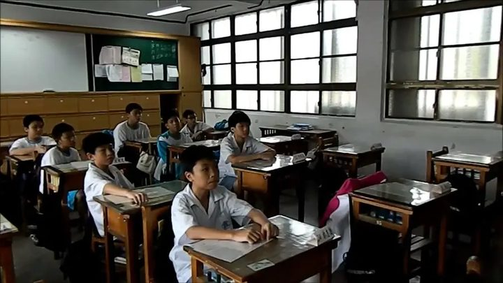
永樂市場資深布商・布思綠創辦人
從校園魚池到老城區的街頭市集，他把種植的本事和布商的人脈，用在社區與孩子身上。
順發電腦創辦人・用消費改變世界
2010 年，順發宣布轉型為「公益型企業」。不靠一次性的大筆捐款，而是把公益寫進每一筆交易裡——讓顧客不多花一毛錢，就能一起幫助弱勢學童。
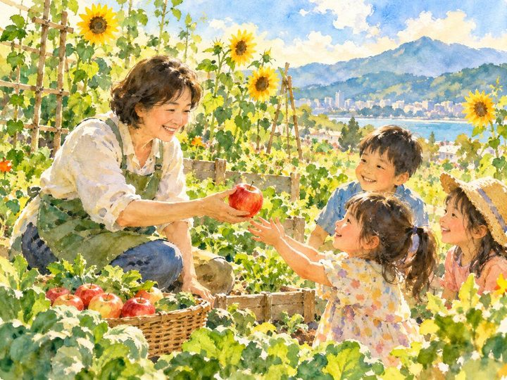
示意插畫長期參與，與學員一起學習待人處事。
出處：BNI 會員資料表（2026.01）參與地方婦女事務。
出處：BNI 會員資料表（2026.01）為退休同仁服務。
出處：BNI 會員資料表（2026.01）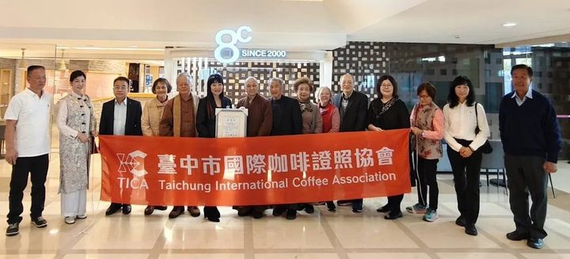
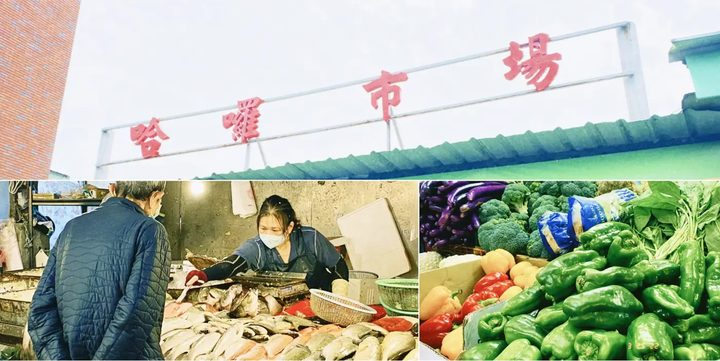
好事從哈囉開始
哈囉的生意，本來就長在地方上：活化閒置土地、讓市集有人氣、把舞台借給街頭藝人、給二度就業的人一個位子。以下每一項都附上公開出處。
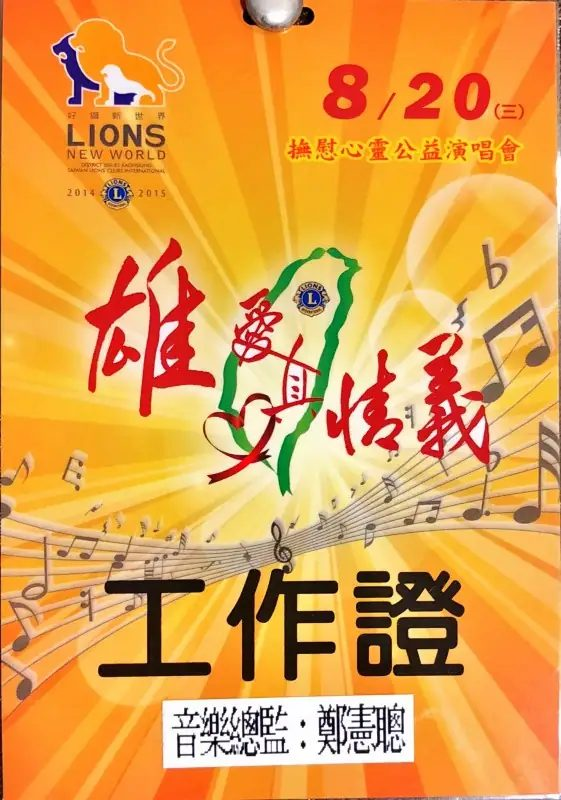
憲樂錄音室 SendStudio 創辦人・AI 影音行銷講師
他擅長的是聲音和知識，所以他的公益也從這兩件事出發：在公益音樂會幕後掌控聲音，在免費講座分享趨勢，也把錄音室大門打開給學生。
擔任幕後工作人員。出處：官網工作證相簿
出處：官網工作證相簿（工作證載明「音樂總監」）
參與協會活動。出處：官網工作證相簿
開放錄音室給學生參觀並實地體驗。出處：官網最新消息 2016.09
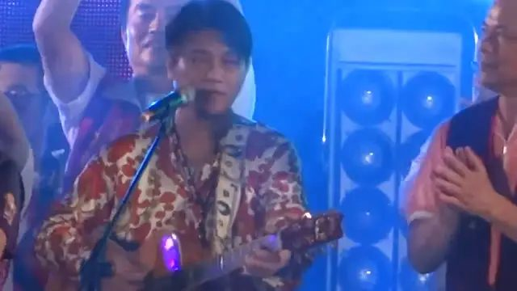
華語・台語雙棲詞曲創作人、唱片製作人
吳梵說：「我剛好在唱片、在出版業，對社會還有一點點貢獻。」他的公益是把台語說清楚、把新聲音帶上來，也是在地方與社團的舞台上開口唱歌。
抱著吉他帶全場大合唱。
出處：YouTube〈吳梵老師 向前走 2014.8.20〉在獅子會 2019–2020 年度活動上獻唱。
出處：YouTube〈唱片製作人吳梵演唱水某〉上公視台語台分享《彙音寶鑑》與台語正字，「這就是我現在可以做的事情」。
出處：公視台語台《心所愛的歌》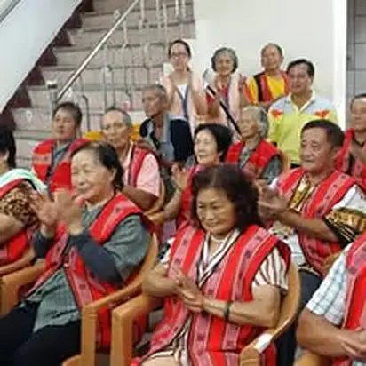
新竹竹夢扶輪社創社社長・亞勃華騰國際商業董事長
Helen 的公益不是一次性的捐款，而是一套持續運轉的方式：先聚起一群人，再一起去照顧孩子、部落與遠方。
1 月 18 日授證，25 位創社社員，Helen 任創社社長。
出處：扶輪地區紀錄接待加拿大交換學生 Dominic，歡送禹嘉出國交換。
出處：鄒祥星臉書公開相簿參與國際扶輪 3500 地區原住民文物站修繕計畫捐贈暨啟用典禮。
出處：鄒祥星臉書公開相簿於希望園區擔任講師：生命教育法、資優兒教養、親密關係、兒童四書五經導讀。
出處：講座紀錄（本人提供資料）列名台北市千禧扶輪社「預防購屋糾紛計畫」捐款芳名錄。
出處：千禧扶輪社捐款芳名錄把凝聚夥伴的經驗，帶到全地區各扶輪社。
出處：國際扶輪 3501 地區職務名單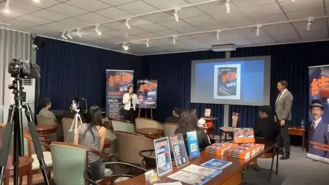
總工程師．企業教練．《結繩領導學》作者
工程師的公益，是在災後第一時間到場；教練的公益，是把一輩子的經驗免費講給願意聽的人。
地震發生後，他自己開車、帶上物資到災區探訪；這份同理，也讓他後來成為住戶信任的補強工程主導者。
出處：看雜誌 2026/08面對兩百多名受災住戶，不護短、不含糊，最終受託主導整棟大樓結構補強。
出處：看雜誌 2026/09擔任國家培訓董事，看著企業主從一人公司走到開出連鎖店，他說：「這是給我最大的一個回饋。」
出處：看雜誌 2026/09《結繩領導學》線上座談，每場限額 100 人，主持人包括大樹教練、娃娃姐、Peter Chen。
出處：結繩領導學官網（封存頁）由尚政老師主持的 AI 公益講座，列在新書座談系列之中。
出處：結繩領導學官網（封存頁）高雄市立圖書館實體座談，開放讀者面對面提問。
出處：結繩領導學官網（封存頁）新書二刷時，親編三件不販售、只有一個版本的傘繩紀念品，送給分享閱讀心得的讀者。
出處：乾淨世界貼文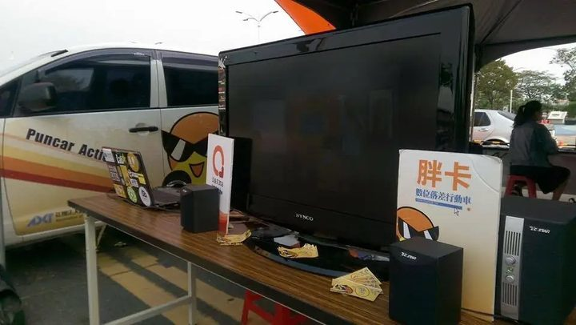
把學 AI 變得像喝水一樣簡單
AJ 的教學起點，是 2009 年莫拉克風災後的數位重建。從開著胖卡下鄉教長輩用電腦，到陪公益組織、病友團體與偏鄉老師用 AI——他把「縮短數位落差」做了十五年。
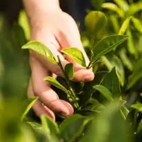
一間只賣紅茶的店・創辦人 莊政安（布萊恩）
對布萊恩來說，公益不是一次性的活動，而是藏在每一杯茶裡：照顧土地的茶園、不留油墨的杯子、可以分解的吸管，還有走進夜市的愛心義賣。
於台南大東夜市與多家人氣店家到場義賣，當日義賣所得全額捐出。
出處：布萊恩紅茶中華店粉絲專頁 2017.05.01半天的採茶、揉茶與茶席體驗，寓教於樂，也讓更多人認識台灣茶葉。
出處：LINE TODAY 報導在疫情最艱難的時候，希望用一杯茶為大家帶來幸福感。
出處：LINE TODAY 報導為配合環保署政策並避免疫情期間交互感染，全省門市取消集杯套兌換，並保留過渡期照顧老顧客。
出處：布萊恩紅茶官網〈最新消息〉2022.08.05可分解、可回植、可回收的材質，減輕地球負擔。
出處：布萊恩紅茶官網〈品牌介紹〉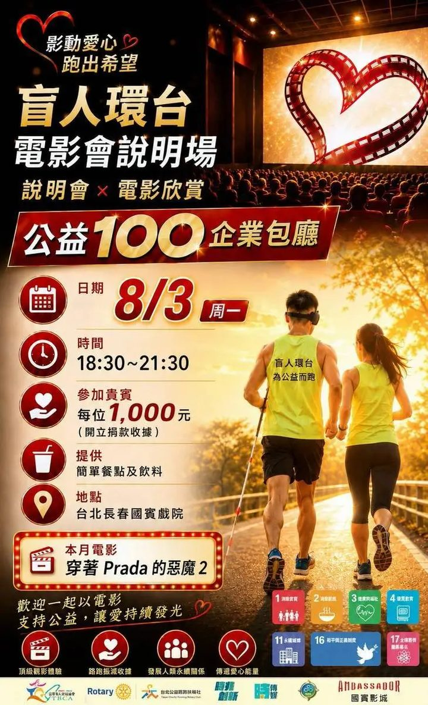
暢銷書教母・2的N次方人生
娃娃姐做公益不是退休後的一時興起：從大學參加救國團開始，她把商業上的系統思維帶進公益──設計機制、串起資源，讓善意可以持續、可以放大。
從大學時代開始投入青年服務。
參與出版《那些年當我們嚕在一起》等書。
連續 20 年螢火蟲計畫每年默默幫助 20 位弱勢國高中生。出處：人物專訪音訊
盲人跑者連續 16 天、每天一場馬拉松，為 25 個社福單位募資；8/3 舉辦「公益 100 企業包廳」電影會說明場。
協助盲人扶輪社社長林信宏出書，賣出四、五千本。他說：「我要做一個手心向下的歌手。」
為青琪老師新書《輪椅到不了的地方，夢想可以》舉辦公益電影包場與新書預售。
以創辦人身分投入公益投資。
鋼琴・歌唱老師・《音樂。人生。診聊室》主持人
對宜倫老師來說，分享音樂本身就是一種給予：免費的體驗課、免費的短片、免費收聽的 Podcast，讓「想學卻不敢開始」的人，先跨出第一步。
過年在家一起練琴：C 大調順階和弦教學。出處：YouTube 短片
把現場音樂帶進攝影展，邀大家「好好看一場表演」。出處：YouTube 短片
流行樂團合奏（10/13）、流行歌唱成人班（10/29）。出處：Instagram 海報
免費下載、免費註冊、免費收聽。出處：本人 Facebook 貼文
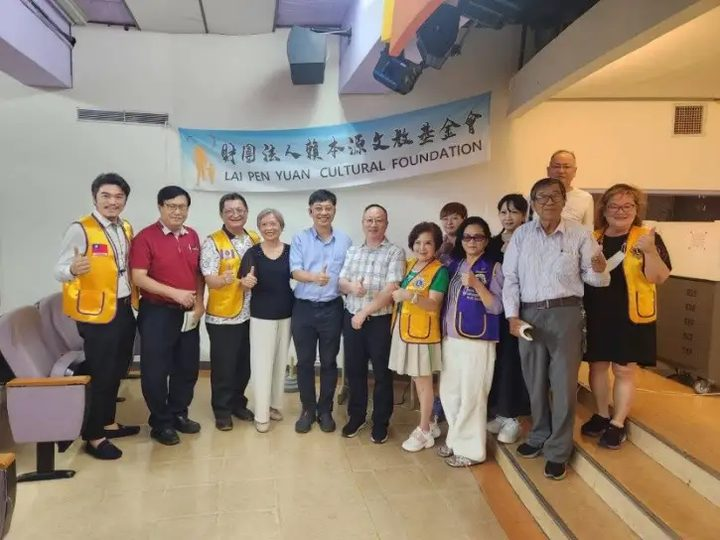
由永覲工業、徠源投資與賴昭賢等人捐助，以創辦人之名設立；宗旨包含獎學金、清寒獨居老人溫情送暖與助學金。
出處：社團財團法人資料站基金會長期與各地方社團合作，舉辦養生講座與公益義診，並聯合出版十種以上健康教育叢書免費贈送。
出處：永覲官網・公益ESG、基金會官網基金會發展的社會企業，在台南官田推廣無毒圳頭米種植，讓原生水稻有無毒的棲息環境。
出處：永覲官網・徠園農場臨海廠協會力促與菲律賓大學共同建立高級人才教育與在台生活關懷平台，於國慶夜正式掛牌；起點是同年臨海50論壇上提出的缺工與傳承議題。
出處：臨海廠協會 Facebook廠協會舉辦 2024 年模範勞工表揚，向園區勞工致敬。
出處：賴瑞隆 Instagram 2024-04-19賴本源文教基金會與立委陳玉珍、涂碧紀念基金會及旅宿業者合作，擴大金門鄉親赴台就醫免費住宿關懷服務。
出處：永覲官網 2024-12-09大發、和發、鳳山、臨海四大廠協會首度聯手，表揚 182 位模範勞工。
出處：NOWnews、台灣好報 2026-04率中國文化大學校友會理監事出席「港都文化頌」聯展，向推動美育與關懷弱勢的吳素蓮老師致敬。
出處：經濟日報 2026-10-19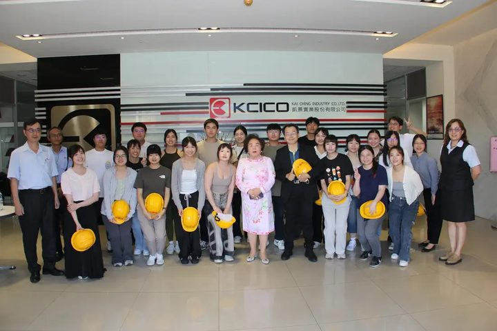
凱景實業・把鋼板烤出顏色的人
對一家烤漆鋼品廠來說，最實在的公益是：把廢氣變成能源、把工廠打開給學生和經理人當教室、把員工當家人照顧。以下是凱景在官網與媒體上留下的公開紀錄。
ISO 14001 環境（2017）、ISO 45001 職安衛（2020）、ISO 14064-1 溫室氣體盤查（2022）、ISO 14067 碳足跡（2024）、ISO 50001 能源管理（2025）。
出處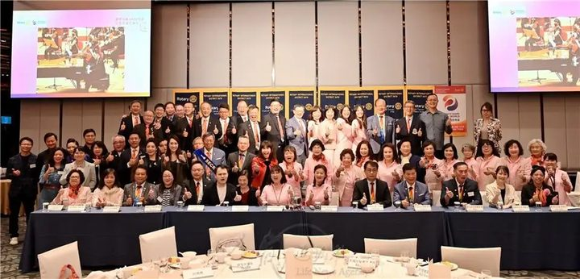
視障鋼琴家・用琴聲翻譯生命故事
從 13 歲第一次在慈濟「生命之歌」上台，到為花蓮災民寫曲，哲誠把每一次演出都當成陪伴。下面每一筆足跡都附上出處。
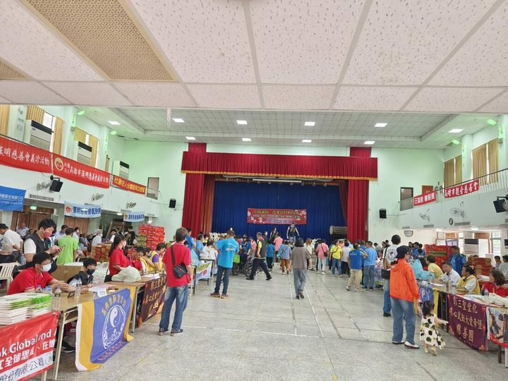
中華身心平衡推廣協會
協會跳脫傳統慈善框架，以社會企業模式運作，把「身心靈平衡」帶進鄉鎮村里，創造「個人健康、家庭圓夢、社會共好」的三贏人生。
於台南永康東橋里里民活動中心，與里長合辦，談牙周病與全身健康的關聯。
出處：活動海報協辦台灣敬舜功德會公益活動，於嘉義竹崎內埔國小發放助學金、愛心物資，並有義診與推拿服務。
出處：活動海報、現場照片協辦十方義工團活動，提供氣血檢測、推拿理療、養生茶飲等免費關懷。
出處：活動海報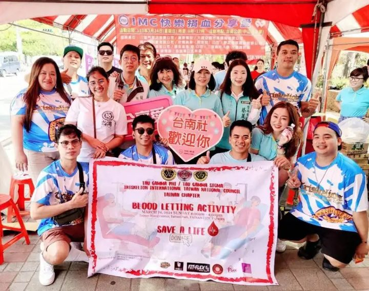
專注細節的市場實戰派・三道門建築文創旅店創辦人
對 Tiffany 來說，公益不只是一天的活動：是社團動員的捐血、是十五年的默默支持，也是把一整棟旅店蓋成綠色低碳的日常選擇。
環保建材、節能空調與燈具、低輻射建材與隔熱磚，廊道以熱泵供應冷空氣，整體電費估計降低 25%～30%。
出處：女性創業飛雁計畫專訪Tiffany 15 年來默默支持 YMCA「助學之愛、生命工程、希望之手」社會服務，並號召參加 5/2 愛與希望園遊會。
出處：個人網站部落格（2021.04.08）台南市政府推廣低碳旅遊，「魚頭君領路 台灣好行綠悠遊」綠色主題遊程，三道門獲選唯一符合綠色主題的低碳旅宿。
出處：個人網站〈建築文創事業〉第十二屆女性創業菁英獎首次頒發「綠色企業特別獎」，鼓勵企業落實淨零碳排，三道門旅店是兩家得主之一。
出處：NOWnews 2023.11.17台南血荒，IMC 台南社在中山捐血站號召民眾挽袖，目標 600 袋；到中午已有近 300 人到場。社長李勳婷說：「愛心公益無國界。」
出處：自由健康網 2024.03.24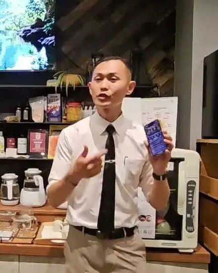
水兵 Riley・壽險顧問・《中年勇敢轉職，經營你的人生》作者
對千禾來說，替一個家庭把保障規劃好，就是最實在的社會安定；把自己走過的路免費寫出來、拍出來，就是讓下一個人少繳一點學費。
入行第一、二年，分別以 PTC 水晶獎與 CTC 銅牌獎，為客戶家庭建立起保障。
出處：博客來作者簡介受邀於台師大台北市校友會專題講座，並在台北、高雄分享中年轉職經驗。
出處：本人 YouTube〈台北第一場新書發表會〉足跡內容與照片擷取自各人專屬頁面，出處標示於每則足跡；照片版權屬原拍攝與發布單位。標示「待本人確認」的項目，尚待本人確認。
獲《遠見》CSR 公益推廣組首獎：三年捐出逾 1 億元，幫助近 18 萬人次弱勢族群，帶動逾 1,300 萬人次消費行善。
閱讀原文 →從殺價競爭的 3C 賣場強人，到一年捐出好幾千萬而不悔的公益企業家。
閱讀原文 →保證賣貴退差價，讓消費者不多花一毛錢就能做公益。
閱讀原文 →首屆結餘 98.6 萬元，贊助高雄偏鄉 11 所學校；數十位企業家帶頭領跑。
閱讀原文 →三年捐贈 1,200 組學習帳號，47 校次師生受惠。
閱讀原文 →順發門市回收整修的電腦，無償送到弱勢家庭學童手上。
閱讀原文 →第四屆結餘 173 萬 8,328 元全數捐出，幫助 17 個高雄兒少安置與照顧單位。
閱讀原文 →「讓科技更有溫度」——把公益與永續精神深植於經營核心。
閱讀原文 →報導記載：順發消費行善人次已超過 4,510 萬，受益人數超過 349,400 人。
閱讀原文 →近 40 家指標單位共同發起，結餘款將全數投入高雄在地兒少照護與教育。
閱讀原文 →「一個人跑，是完成自己的里程；一群人一起跑，可以讓一座城市產生力量。」
閱讀原文 →從港都公益路跑、再生電腦送到孩子手上，到捐贈偏鄉學校——55 個順發公益現場，都來自公開的媒體報導。點任何一張，就能看完整大圖與原始報導。
順發證明了一件事：公益不必等到公司夠大、獲利夠多才開始，也不一定要花大錢。真公益企業家俱樂部，就是要把這樣的經驗分享出去——讓更多企業家找到適合自己的公益模式，並且一起走、走得遠。
從順發的「消費做公益」出發，交流各行各業可以怎麼把公益寫進產品、服務與日常營運。
聯合公益，而不是各自努力：從 Run for Future 的 100 家共同發起，到每一次共同行動。
公益是有足跡的。我們為每一位成員記錄、整理、傳播他的公益足跡，讓善意帶動更多善意。
首批 100 席・已有 7 席加入。黃色那一格是順發；下一格，可以是你。
第 1 席・順發其他 6 席已加入下一席・你
不用等到準備好，不用一次做很多。只要願意開始，你就已經是真公益的一份子。
我的真公益發起人足跡